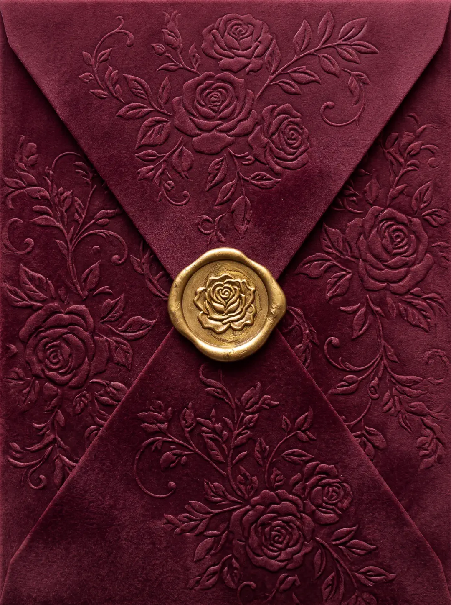
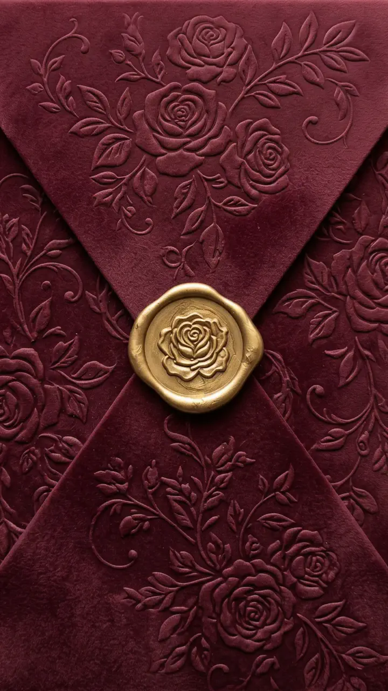
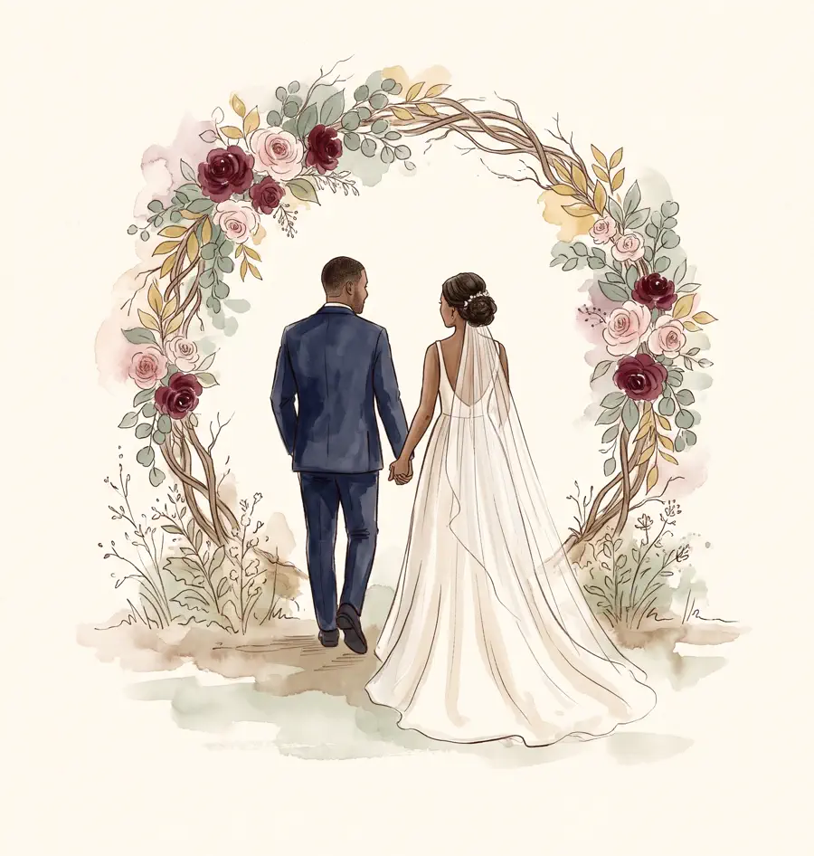
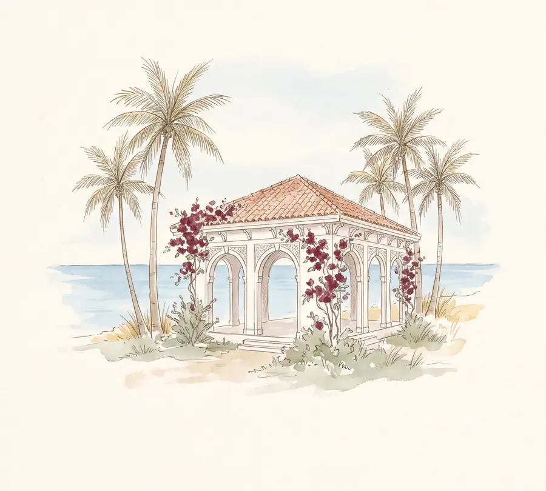

Pour Nadège
Votre code personnel AK-12
Il est déjà inscrit : pressez le cachet de cire.

Votre invitation au mariage de
Ont la joie de vous convier à leur mariage

Tout a commencé par un regard, un soir à Libreville. Nous voulons vous offrir la suite, et la vivre entourés de ceux qui comptent.
Invitation de Nadège · Table 7Chaque invité reçoit la sienne, à son prénom. Nadège est ici une invitée d'exemple.
Réservez la date
Accueil à 15 h 00 ·
0jours
0heures
0minutes
0secondes
Le programme
La tenue
Chaque famille porte son pagne officiel. Touchez le vôtre pour le commander.
Le lieu
Le Grand Salon
Bord de mer, Libreville

Le Grand Salon
Boulevard du bord de mer, Libreville
Votre table : la 7, côté mer.
L’album
Quelques pages de notre histoire, en attendant de vous retrouver.
- Après le grand jour, les photos de nos invités viendront ici.
Touchez un tirage pour l’agrandir.
Les vœux
Les mots que vos invités vous laissent, au fil des semaines.
Votre réponse
Merci de répondre avant le
Touchez l'enveloppe pour sceller votre réponse.
Votre réponse est partie.
Voici le Pass d'entrée que recevrait Nadège, votre invitée.
Leur foyer
Votre présence leur suffit. Pour celles et ceux qui le souhaitent, Awa et Karl ont ouvert une cagnotte pour leur foyer.
Votre geste passe par Airtel Money ou Moov Money, au nom des mariés. Le montant reste entre vous et eux.
De votre côté, tout se suit en direct.
142 invitations ouvertes, 96 présences confirmées, 188 couverts, 11 régimes particuliers.
- Famille d’Awa51 présences
- Famille de Karl45 présences
- Cagnotte du foyer37 participations
- Nadège Mbaconfirmée, deux couverts
- Marc Obiangconfirmé, végétarien
- Famille Ndonginvitation ouverte hier
- Tantine Odilepas encore ouverte
- Jean-Paul Ellaexcusé, en mission
Exemple de registre, tel que vous le verriez trois semaines avant le grand jour.
Mayi Expériences
Ce que nous créons pour vous
- Un lien et un code pour chaque invité. Vous savez qui a ouvert, qui a répondu, et vous retirez un accès à tout moment.
- Votre histoire, à votre image. Vos photos, votre lieu, les pagnes de vos familles et votre musique.
- La cagnotte de votre foyer, par Airtel Money ou Moov Money.
- Le jour J, chaque invité trouve sa table ; le soir même, le film de votre fête.
- Votre adresse à vos prénoms, awa-et-karl.com, en français et en anglais.